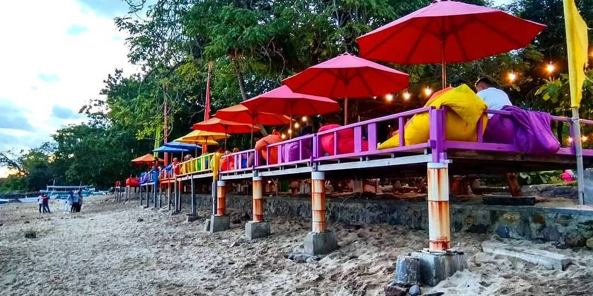

Welcome
Lokasi: Lapangan Andi Makkasau, Jl. Karaeng Burane, Mallusetasi, Ujung, Kota Pare-Pare, Sulawesi Selatan.
Read more
https://nyero.id/tempat-wisata-di-kota-pare-pare/

Pantai pasir Putih Tonrangeng
Lokasi: Jl. Latassakka, Lumpue, Bacukiki Barat., Kota Pare-Pare, Sulawesi Selatan
Read more
https://nyero.id/tempat-wisata-di-kota-pare-pare/